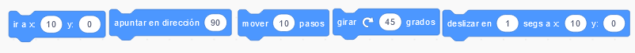
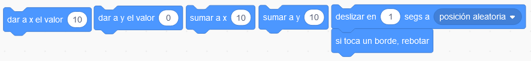

El escenario es el lugar por donde va a ocurrir la acción del proyecto; donde se van a mover los personajes de tus historias.
¡Deslicémosnos por este apartado!
Desplazamientos por el escenario de Scratch
En este punto, mostraremos las diferentes formas de provocar desplazamientos por el escenario de los objetos.
Ubicación en el plano
La pantalla de Scratch tiene un tamaño de 480 por 360 milímetros y para movernos sobre ella, nos tendremos que mover sobre un eje de coordenadas en el que el centro del eje coincide con el centro del fondo siendo este la coordenada “X=0 e Y=0”.
Para desplazarnos a la izquierda la “X” tomaría valores negativos hasta -240 y para desplazarnos a la derecha tomaría valores positivos hasta la coordenada 240. Para desplazarnos hacia abajo la “Y” tomaría valores negativos hasta -180 y para desplazarnos hacia arriba tomaría valores positivos hasta la coordenada 180. Para movernos de izquierda a derecha cambiaríamos el valor de la “X” y para hacerlo de abajo a arriba cambiaríamos el valor de la “Y”.

Ir a x: y:, dirección, movimiento, giro o desplazamiento
Revisaremos para qué sirve cada uno de los bloques de la categoría movimiento, en Scratch. Desde los bloques más sencillos: Ir a X=0 Y=0, apuntar en cierta dirección, mover 10 pasos, girar ángulos y desplazarse por el fondo.
Bloques extra para controlar al objeto
Ahora revisaremos varios bloques, que pueden ser interesantes para nuestro reto final, sobre el dar valores a X e Y, Suma a X e Y, desplazamiento y rebote en los laterales del escenario.